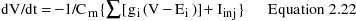
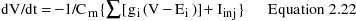

Modelling the single neuron for simulation.
Simulation of a single neuron was done on Linux 6.2 operating system
using GEneral NEural SImulation System, GENESIS 2.2 beta version. The
programmes are listed at the end of this section. A simplified model
of neuron, consisting of a soma compartment, was constructed assuming
a spherical shape of 30 micron diameter, a specific membrane
capacitance of 1 microF/cm2 and -80 mV resting membrane potential
(Erest, see compartment.g and constants.g). rNav1.2a channel was
written as a tabchannel object (Rat_Na_sm.g) which maintains a lookup
table for the fitted parameters of the rate constants. The activation
parameters of rat brain delayed rectifier potassium channel were taken
from earlier experimental data (Traub et al., 1991) and can be found
in traub91chan.g. Membrane conductances were represented using
Hodgkin-Huxley like models (Hodgkin and Huxley, 1952) of the form:
 where m, h and n carry the usual meaning (see section 1.4 of
introduction).
Other channel parameters were:
GNa = 700 mS/cm2 for the simulation in Fig. 5.4, 2900 mS/cm2 for the
simulation in Fig. 5.6, 1500 mS/cm2 for the simulation in Fig. 5.8 and
1600 mS/cm2 for the simulation in Fig. 5.9 (see results in section 5.3
of chapter V), ENa (reversal potential for sodium ion) = 0.125 +
Erest, GK = 5 mS/cm2, EK (reversal potential for potassium ion) =
-0.012 + Erest, Eleak (reversal potential for leak conductances) =
0.0106 + Erest (see constants.g and Rat_Na_sm.g).
Voltage was simulated using following Equation:

where V is membrane potential, Cm is membrane capacitance, gi is ionic
conductance, Ei is reversal potential (i indicates ion), and Iinj is
the injected current. The simulation was done in a discreet
manner. Each time one pair of rate constants alpha_m, beta_m, alpha_h,
beta_h values were calculated from the steady state activation and
inactivation m_infinity and h_infinity and potential dependence of
time constants of activation tau_m and fast inactivation tau_h (see
section 2.6) and included in the model. Simulation was done for 200 ms
for all the cases to examine the dependence of neuronal excitability
on sustained prepulse duration. The graphics.g contains informations
required for the necessary graphics output interface and tools.g helps
to generate ASCII output of the simulation. The file Modelneuron.g is
the main executable file that includes all the modules of the
simulation.
where m, h and n carry the usual meaning (see section 1.4 of
introduction).
Other channel parameters were:
GNa = 700 mS/cm2 for the simulation in Fig. 5.4, 2900 mS/cm2 for the
simulation in Fig. 5.6, 1500 mS/cm2 for the simulation in Fig. 5.8 and
1600 mS/cm2 for the simulation in Fig. 5.9 (see results in section 5.3
of chapter V), ENa (reversal potential for sodium ion) = 0.125 +
Erest, GK = 5 mS/cm2, EK (reversal potential for potassium ion) =
-0.012 + Erest, Eleak (reversal potential for leak conductances) =
0.0106 + Erest (see constants.g and Rat_Na_sm.g).
Voltage was simulated using following Equation:

where V is membrane potential, Cm is membrane capacitance, gi is ionic
conductance, Ei is reversal potential (i indicates ion), and Iinj is
the injected current. The simulation was done in a discreet
manner. Each time one pair of rate constants alpha_m, beta_m, alpha_h,
beta_h values were calculated from the steady state activation and
inactivation m_infinity and h_infinity and potential dependence of
time constants of activation tau_m and fast inactivation tau_h (see
section 2.6) and included in the model. Simulation was done for 200 ms
for all the cases to examine the dependence of neuronal excitability
on sustained prepulse duration. The graphics.g contains informations
required for the necessary graphics output interface and tools.g helps
to generate ASCII output of the simulation. The file Modelneuron.g is
the main executable file that includes all the modules of the
simulation.